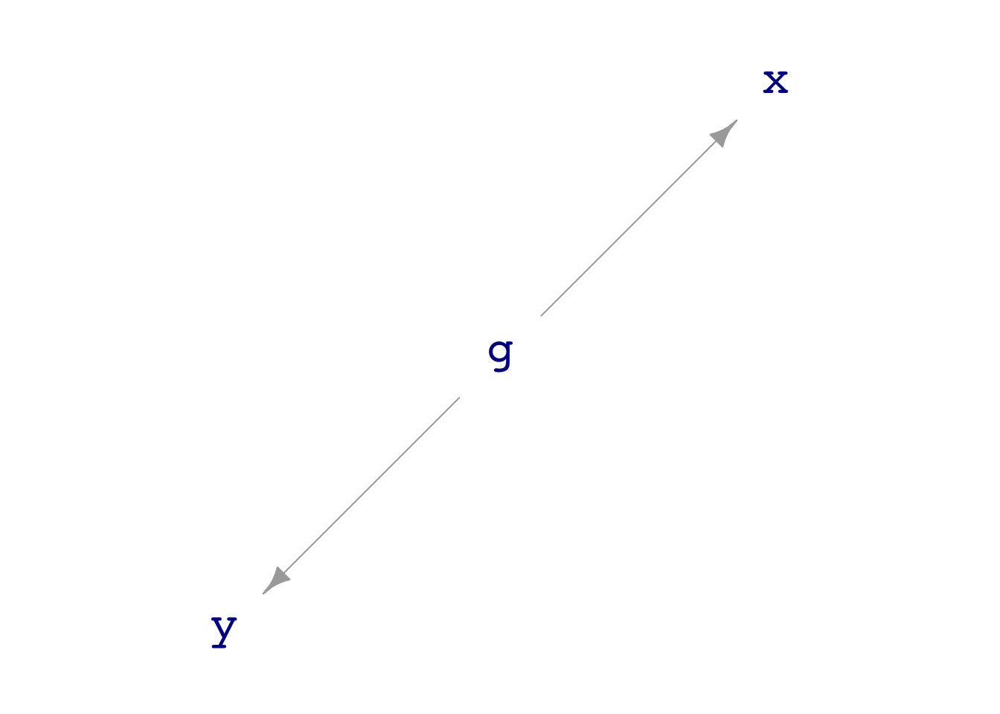
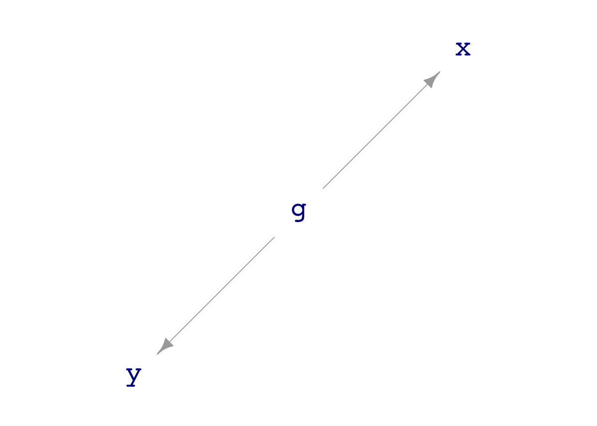

print(dag03)g ~ exo()
x ~ 1 * g + exo()
y ~ 1 * g + exo()dag_draw(dag03)
Math300Z
We think about data with multiple variables as depicting a system: an interconnected network of components. Some components appear as variables in the data frame; other components may be unmeasured but given a name for reference.
Use “directed acyclic graphs” (DAGs) to draw a picture of the system. Each system component is a node of the DAG. When one component has a causal connection with another, an arrow is drawn between those nodes.
By analysis of the DAG—using techniques we haven’t covered yet—you can figure out which variables to include in your model.
Many DAGs are provided with the {math300} package, with names like dag01 through dag12. Here’s an example:
print(dag03)g ~ exo()
x ~ 1 * g + exo()
y ~ 1 * g + exo()dag_draw(dag03)
Notice that there is no direct flow between nodes x and y. Still, there is an indirect connection: node g influences both x and y.
My_data <- sample(dag03, size=10000)mod1 <- lm(y ~ x, data=My_data)will show if there is any kind of connection between x and y. But another specification will, in this case, show that the connection from x to y is via the connection provided by node g.
mod2 <- lm(y ~ x + g, data=My_data)We can look at the coefficients to see that in mod1 there is a non-zero connection between y and x, but in mod2 there is no non-zero connection of x on y.
mod1 |> conf_interval()| term | .lwr | .coef | .upr |
|---|---|---|---|
| (Intercept) | -0.0298 | -0.00563 | 0.0186 |
| x | 0.4800 | 0.49700 | 0.5140 |
mod2 |> conf_interval()| term | .lwr | .coef | .upr |
|---|---|---|---|
| (Intercept) | -0.0120 | 0.00785 | 0.0277 |
| x | -0.0237 | -0.00392 | 0.0159 |
| g | 0.9680 | 0.99700 | 1.0200 |
One way we will use DAGs to help us learn statistics is to compare the coefficients of models to the (known) mechanism of the DAG. We can see, for instance, that the g coefficient on y is 1 and the x coefficient is zero. Only mod2 reveals this.
Let’s collect a small (\(n=10\)) sample from dag01:
set.seed(103)
Small <- sample(dag01, size=10)
head(Small, 3)| x | y |
|---|---|
| -0.7860 | 1.89 |
| 0.0547 | 4.12 |
| -1.1700 | 2.36 |
We can easily plot the data points. Less obviously, we can find any number of mathematical functions that are consistent with the data.
dag01.)In general, we don’t insist that model functions go exactly through the data points. Instead, we imagine that the response variable involves some random noise that we don’t need to “capture” with our model. Doing things this way lets us fit model functions that are much simpler in shape, like this one:
Constructing such a model divides the “explanation” of the response variable values into two parts:
The signal is the model values. The noise is the residuals.
When we “fit” (or, “train”) a model, we take an aggressive stance. We look for the particular function of the shape implied by the model specification that will produce the smallest residuals. As usual, we measure the size of a residual by its square.
We depict the “size” of the signal as the amount of variability in the model values. As always, we measure variability using the variance.
Similarly, the “size” of the noise is the amount of variability in the residuals.
The model_eval() function is convenient for figuring out the model value and the residual for each row in the training data.
The training data
Small| x | y |
|---|---|
| -0.790 | 1.90 |
| 0.055 | 4.10 |
| -1.200 | 2.40 |
| -0.170 | 6.30 |
| -1.900 | 0.93 |
| -0.120 | 2.90 |
| 0.830 | 5.70 |
| 1.200 | 5.90 |
| -1.100 | 2.10 |
| -0.380 | 4.20 |
Output of model_eval()
Pts <- model_eval(mod)| .response | x | .output | .resid | .lwr | .upr |
|---|---|---|---|---|---|
| 1.90 | -0.790 | 2.9 | -1.0000 | 0.37 | 5.4 |
| 4.10 | 0.055 | 4.4 | -0.2400 | 1.80 | 6.9 |
| 2.40 | -1.200 | 2.2 | 0.1400 | -0.38 | 4.8 |
| 6.30 | -0.170 | 4.0 | 2.4000 | 1.50 | 6.5 |
| 0.93 | -1.900 | 1.0 | -0.0810 | -1.80 | 3.8 |
| 2.90 | -0.120 | 4.1 | -1.1000 | 1.50 | 6.6 |
| 5.70 | 0.830 | 5.7 | -0.0033 | 3.00 | 8.4 |
| 5.90 | 1.200 | 6.3 | -0.4400 | 3.50 | 9.2 |
| 2.10 | -1.100 | 2.4 | -0.2300 | -0.22 | 4.9 |
| 4.20 | -0.380 | 3.6 | 0.6200 | 1.10 | 6.1 |
How big is …
Pts |> summarize(i. = var(.response),
ii. = var(.output),
iii. = var(.resid)) | i. | ii. | iii. |
|---|---|---|
| 3.55 | 2.6 | 0.949 |
For every lm() model you build, the variance of the response variable is exactly equal to the sum of the variance of the model values and the variance of the residuals.
In other words, lm() splits the response variable into two parts: the sum of those parts equals the whole.
R2 is the variance of the model values divided by the variance of the response variable.
mod |> R2()| n | k | Rsquared | F | adjR2 | p | df.num | df.denom |
|---|---|---|---|---|---|---|---|
| 10 | 1 | 0.733 | 21.9 | 0.699 | 0.000863 | 1 | 8 |
Pts |>
summarize(i. = var(.response),
ii. = var(.output)) |>
mutate(R2 = ii. / i. )| i. | ii. | R2 |
|---|---|---|
| 3.55 | 2.6 | 0.733 |
Models can have any number of explanatory variables. In Math 300, we will be mainly concerned with models with a single explanatory variable or with two explanatory variable. Since an explanatory variable can be either categorical or quantitative, there are six “shapes” of models:
Single explanatory variable
Two explanatory variables
Sometimes, we will use models with Zero explanatory variables
Graphs of (i) through (v), with (iv) shown in two different modes.